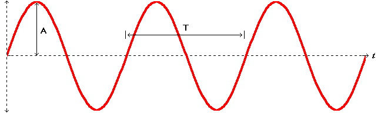
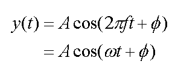

where, y(t-ts) is the delayed version of y(t).
A sinusoid is one of the most important periodic functions in mathematics and the fundamental unit of harmonic signals found in nature. It is extensively used in all areas of signal processing. Below, a simple cosine wave is shown.

The horizontal axis represents time while the vertical axis can represent the instantaneous magnitude of any continuous physical quantity, including but not limited to sound (air pressure), voltage, and electrical or magnetic fields (radiation). As you can see, it oscillates between two equal and opposite maximal points with zero at the center. The amount of deviation from zero is called the amplitude, shown as the symbol A above. The overall height of the signal is 2A which is often known as the peak-to-peak value of the signal. It also repeats itself every T seconds, a time span known as the period of the signal. The inverse quantity of the period (1/T) is called the frequency of the sinusoid, representing how many times it repeats itself per unit time; a common unit of measurement is the Hertz (repetitions per second). This particular cosine wave does not begin at its maximal amplitude at time zero so it is delayed in time as measured by an angle known as the phase of the sinusoid.
The general form of a sinusoidal signal is shown below. Though a cosine is used here, a sine wave is just as valid because it is effectively a cosine with a phase of negative 90 degrees. Cosine waves are much more commonly used in signal processing, however.

The parameters of this function include the amplitude A of the signal, the frequency f which we introduced above, and the phase F. The parameter f is also known as the cyclic frequency (from "cycles" per second instead of "repetitions") in order to differentiate it from the radian frequency shown above as w. F represents the phase of the sinusoid and exists only if the signal is time-delayed. Consider the derivation below:
where, y(t-ts) is the delayed version of
y(t).
The phase is thus the negative product of the signal's radian frequency and time delay. To find the phase of a cosine wave from its plot, identify the time of the first positive peak after zero and the frequency of the sinusoid. Then multiply these two numbers together, negate the product and the result will be the phase shift.
Try a few quizzes from the sindrill tool to master or sharpen your ability to read sinusoids according to the above principles. Make sure that you fully understand the fundamental characteristics of sinusoids before moving on.
Does it all make sense to you? If you are not sure go over it one more time.
If you still do not get it, let me know what is confusing you. Send me an e-mail by clicking on my name in the Overview section. I want to make this tutorial understandable and any feedback is appreciated!